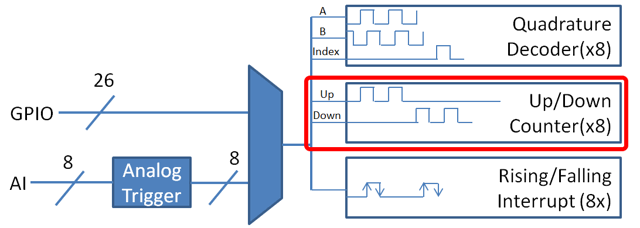

Counters
The Counter class (Java, C++) is a versatile class that allows the counting of pulse edges on a digital input. Counter is used as a component in several more-complicated WPILib classes (such as Encoder and Ultrasonic), but is also quite useful on its own.
Note
There are a total of 8 counter units in the roboRIO FPGA, meaning no more than 8 Counter objects may be instantiated at any one time, including those contained as resources in other WPILib objects. For detailed information on when a Counter may be used by another object, refer to the official API documentation.
Configuring a counter
The Counter class can be configured in a number of ways to provide differing functionalities.
Counter Modes
The Counter object may be configured to operate in one of four different modes:
Two-pulse mode: Counts up and down based on the edges of two different channels.
Semi-period mode: Measures the duration of a pulse on a single channel.
Pulse-length mode: Counts up and down based on the edges of one channel, with the direction determined by the duration of the pulse on that channel.
External direction mode: Counts up and down based on the edges of one channel, with a separate channel specifying the direction.
Note
In all modes except semi-period mode, the counter can be configured to increment either once per edge (2X decoding), or once per pulse (1X decoding). By default, counters are set to two-pulse mode, though if only one channel is specified the counter will only count up.
Two-pulse mode
In two-pulse mode, the Counter will count up for every edge/pulse on the specified “up channel,” and down for every edge/pulse on the specified “down channel.” A counter can be initialized in two-pulse with the following code:
// Create a new Counter object in two-pulse mode
Counter counter = new Counter(Counter.Mode.k2Pulse);
@Override
public void robotInit() {
// Set up the input channels for the counter
counter.setUpSource(1);
counter.setDownSource(2);
// Set the decoding type to 2X
counter.setUpSourceEdge(true, true);
counter.setDownSourceEdge(true, true);
}
// Create a new Counter object in two-pulse mode
frc::Counter counter{frc::Counter::Mode::k2Pulse};
void Robot::RobotInit() {
// Set up the input channels for the counter
counter.SetUpSource(1);
counter.SetDownSource(2);
// Set the decoding type to 2X
counter.SetUpSourceEdge(true, true);
counter.SetDownSourceEdge(true, true);
Semi-period mode
In semi-period mode, the Counter will count the duration of the pulses on a channel, either from a rising edge to the next falling edge, or from a falling edge to the next rising edge. A counter can be initialized in semi-period mode with the following code:
// Create a new Counter object in two-pulse mode
Counter counter = new Counter(Counter.Mode.kSemiperiod);
@Override
public void robotInit() {
// Set up the input channel for the counter
counter.setUpSource(1);
// Set the encoder to count pulse duration from rising edge to falling edge
counter.setSemiPeriodMode(true);
}
// Create a new Counter object in two-pulse mode
frc::Counter counter{frc::Counter::Mode::kSemiperiod};
void Robot() {
// Set up the input channel for the counter
counter.SetUpSource(1);
// Set the encoder to count pulse duration from rising edge to falling edge
counter.SetSemiPeriodMode(true);
To get the pulse width, call the getPeriod() method:
// Return the measured pulse width in seconds
counter.getPeriod();
// Return the measured pulse width in seconds
counter.GetPeriod();
Pulse-length mode
In pulse-length mode, the counter will count either up or down depending on the length of the pulse. A pulse below the specified threshold time will be interpreted as a forward count and a pulse above the threshold is a reverse count. This is useful for some gear tooth sensors which encode direction in this manner. A counter can be initialized in this mode as follows:
// Create a new Counter object in two-pulse mode
Counter counter = new Counter(Counter.Mode.kPulseLength);
@Override
public void robotInit() {
// Set up the input channel for the counter
counter.setUpSource(1);
// Set the decoding type to 2X
counter.setUpSourceEdge(true, true);
// Set the counter to count down if the pulses are longer than .05 seconds
counter.setPulseLengthMode(.05)
}
// Create a new Counter object in two-pulse mode
frc::Counter counter{frc::Counter::Mode::kPulseLength};
void Robot::RobotInit() {
// Set up the input channel for the counter
counter.SetUpSource(1);
// Set the decoding type to 2X
counter.SetUpSourceEdge(true, true);
// Set the counter to count down if the pulses are longer than .05 seconds
counter.SetPulseLengthMode(.05)
External direction mode
In external direction mode, the counter counts either up or down depending on the level on the second channel. If the direction source is low, the counter will increase; if the direction source is high, the counter will decrease (to reverse this, see the next section). A counter can be initialized in this mode as follows:
// Create a new Counter object in two-pulse mode
Counter counter = new Counter(Counter.Mode.kExternalDirection);
@Override
public void robotInit() {
// Set up the input channels for the counter
counter.setUpSource(1);
counter.setDownSource(2);
// Set the decoding type to 2X
counter.setUpSourceEdge(true, true);
}
// Create a new Counter object in two-pulse mode
frc::Counter counter{frc::Counter::Mode::kExternalDirection};
void RobotInit() {
// Set up the input channels for the counter
counter.SetUpSource(1);
counter.SetDownSource(2);
// Set the decoding type to 2X
counter.SetUpSourceEdge(true, true);
Configuring counter parameters
Note
The Counter class does not make any assumptions about units of distance; it will return values in whatever units were used to calculate the distance-per-pulse value. Users thus have complete control over the distance units used. However, units of time are always in seconds.
Note
The number of pulses used in the distance-per-pulse calculation does not depend on the decoding type - each “pulse” should always be considered to be a full cycle (rising and falling).
Apart from the mode-specific configurations, the Counter class offers a number of additional configuration methods:
// Configures the counter to return a distance of 4 for every 256 pulses
// Also changes the units of getRate
counter.setDistancePerPulse(4./256.);
// Configures the counter to consider itself stopped after .1 seconds
counter.setMaxPeriod(.1);
// Configures the counter to consider itself stopped when its rate is below 10
counter.setMinRate(10);
// Reverses the direction of the counter
counter.setReverseDirection(true);
// Configures an counter to average its period measurement over 5 samples
// Can be between 1 and 127 samples
counter.setSamplesToAverage(5);
// Configures the counter to return a distance of 4 for every 256 pulses
// Also changes the units of getRate
counter.SetDistancePerPulse(4./256.);
// Configures the counter to consider itself stopped after .1 seconds
counter.SetMaxPeriod(.1);
// Configures the counter to consider itself stopped when its rate is below 10
counter.SetMinRate(10);
// Reverses the direction of the counter
counter.SetReverseDirection(true);
// Configures an counter to average its period measurement over 5 samples
// Can be between 1 and 127 samples
counter.SetSamplesToAverage(5);
Reading information from counters
Regardless of mode, there is some information that the Counter class always exposes to users:
Count
Users can obtain the current count with the get() method:
// returns the current count
counter.get();
// returns the current count
counter.Get();
Distance
Note
Counters measure relative distance, not absolute; the distance value returned will depend on the position of the encoder when the robot was turned on or the encoder value was last reset.
If the distance per pulse has been configured, users can obtain the total distance traveled by the counted sensor with the getDistance() method:
// returns the current distance
counter.getDistance();
// returns the current distance
counter.GetDistance();
Rate
Note
Units of time for the Counter class are always in seconds.
Users can obtain the current rate of change of the counter with the getRate() method:
// Gets the current rate of the counter
counter.getRate();
// Gets the current rate of the counter
counter.GetRate();
Stopped
Users can obtain whether the counter is stationary with the getStopped() method:
// Gets whether the counter is stopped
counter.getStopped();
// Gets whether the counter is stopped
counter.GetStopped();
Direction
Users can obtain the direction in which the counter last moved with the getDirection() method:
// Gets the last direction in which the counter moved
counter.getDirection();
// Gets the last direction in which the counter moved
counter.GetDirection();
Period
Note
In semi-period mode, this method returns the duration of the pulse, not of the period.
Users can obtain the duration (in seconds) of the most-recent period with the getPeriod() method:
// returns the current period in seconds
counter.getPeriod();
// returns the current period in seconds
counter.GetPeriod();
Resetting a counter
To reset a counter to a distance reading of zero, call the reset() method. This is useful for ensuring that the measured distance corresponds to the actual desired physical measurement.
// Resets the encoder to read a distance of zero
counter.reset();
// Resets the encoder to read a distance of zero
counter.Reset();
Using counters in code
Counters are useful for a wide variety of robot applications - but since the Counter class is so varied, it is difficult to provide a good summary of them here. Many of these applications overlap with the Encoder class - a simple counter is often a cheaper alternative to a quadrature encoder. For a summary of potential uses for encoders in code, see Encoders - Software.